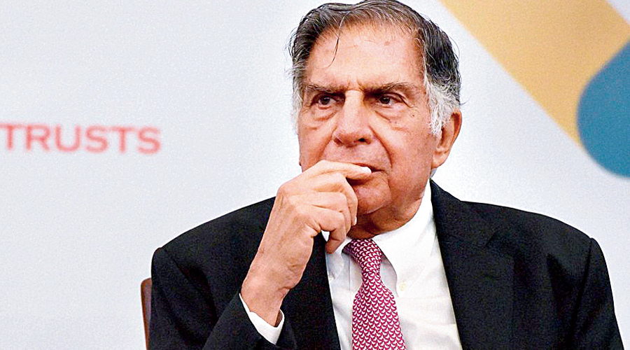

Ratan Naval Tata is an Indian industrialist, philanthropist, and a former chairman of Tata Sons. He was the chairman of Tata Group, from 1990 to 2012, and again, as interim chairman, from October 2016 through February 2017, and continues to head its charitable trusts.

For more information, check out Ratan Tata on Wikipedia. [ Developed by @ Jay ]